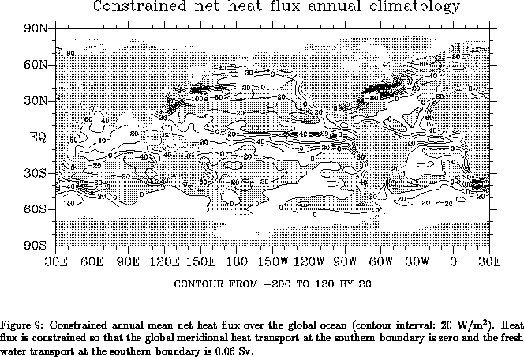
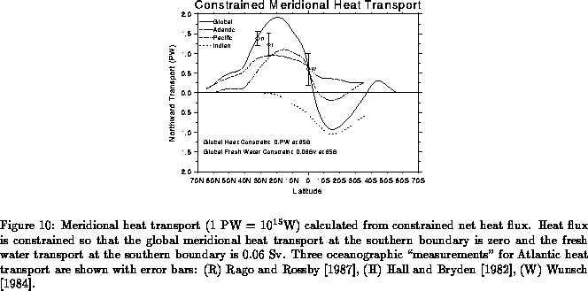
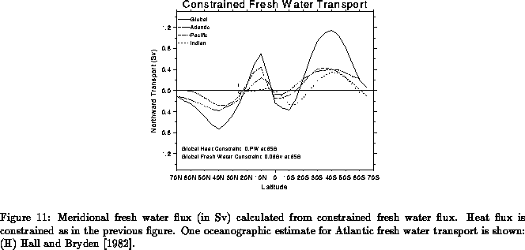

The individual heat flux components, evaporation and precipitation
provided in UWM/COADS are not tuned in any way. It is left to
the user to choose a particular set of tuning parameters most suitable
to the application at hand; section 9.6 discusses the
necessary steps to produce fine tuned fluxes. However, the net heat
flux, buoyancy flux, and evaporation minus precipitation
fields included in the data set have been
constrained using the global balance requirement given in the
first row of Table 13. Figure 9 depicts
the annual mean constrained net heat flux included in UWM/COADS
which should be compared with the unconstrained net heat flux in
Fig. 8. As required by the requirement of zero transport
at 65° S, the
constrained net heat flux now satisfies the consistency
condition (44) when the ocean region between
65° N and 65° S is considered. As we have neglected to tune
those regions poleward of 65°, an imbalance of
have been
constrained using the global balance requirement given in the
first row of Table 13. Figure 9 depicts
the annual mean constrained net heat flux included in UWM/COADS
which should be compared with the unconstrained net heat flux in
Fig. 8. As required by the requirement of zero transport
at 65° S, the
constrained net heat flux now satisfies the consistency
condition (44) when the ocean region between
65° N and 65° S is considered. As we have neglected to tune
those regions poleward of 65°, an imbalance of PW remains in
the constrained net heat flux when we consider the entire global ocean.
The corresponding constrained zonally integrated meridional heat transport for each ocean is shown in Fig. 10, along with several oceanographic measurements in the Atlantic. In agreement with previous studies, our estimate produces a northward transport throughout the Atlantic and a southward transport in the Indian ocean. Our estimate for the southward transport in the South Pacific is somewhat smaller than previous estimates by Hsiung (1985) and Hastenrath (1982). In the Atlantic our estimate is within the error bars for Wunsch's (1984) determination at the equator and Hall and Bryden's (1982) value at 25° N. Our estimated Atlantic heat transport at 32° N is about half the value obtained by Rago and Rossby (1987) who admit their estimate is rather large. In fact, imposing the Rago and Rossby (1987) value as a single-constraint the solution of the inverse calculation violates the consistency condition (57). Similar difficulties were reported by Isemer et al. (1989).

The zonally integrated meridional fresh water transport is depicted in
Fig. 11 for each ocean. For the Atlantic, our estimate
is somewhat smaller than Schmitt et al.'s (1989) in the tropics,
which is based on Bunker's (1976) estimate of evaporation.
At 25° N our estimate gives a southward transport of Sv which is
larger than Hall and Bryden's (1982) value of
Sv, but
conceivably within their error bar.

While the results above suggest that our choice of tuning parameters based on requirement of global balance (first row of Table 13) produces reasonable estimates of heat and fresh water fluxes, it is important to keep in mind that this choice is very likely non-optimal for specific applications. We strongly encourage users to experiment with other choices of parameters.